- Create a static factory method from any widget
- Factory methods may be parameterized with one or more arguments
- Morph any widget into a factory instance
- Add any factory component to the palette
The following is an example of a simple button that is converted into multiple factories. The button has two properties set: its text is set to "OK" and its color is set to red.
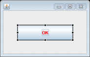 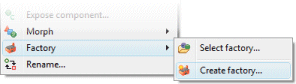
- JButton okButton =
Creating a factory method
Right-click on the component and select the Factory > Create factory... command. In the Create Factory dialog, enter the name of the factory class (or select an existing factory using the Browse button) and the method name for the (static) factory method. If you wish the new factory to be added to the Palette, select a palette category or create a new category using the Palette Manager.
Below this, you will see a list if Creation arguments and Invocations. Creation arguments are passed directly to the constructor of the widget while Invocations are applied to the widget after creation. Note that for SWT factories, the parent container must be passed as an argument as shown below on the right (parent cannot be unchecked).
 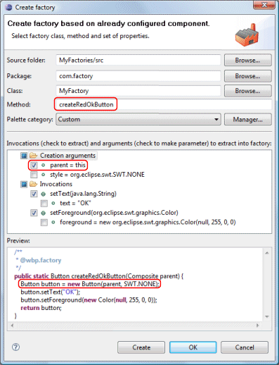
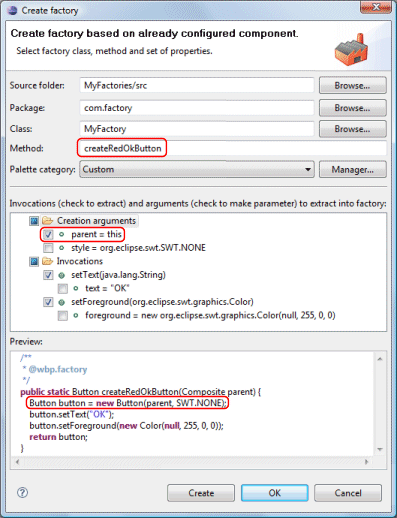
Parameterizing a factory method
As shown in the SWT example above and in the two examples below, a check in a leaf node within the tree indicates that a particular attribute should be a parameterized argument of the factory method. Checking the text creation argument will cause the text property to be passed into the method and applied to the widget. Likewise, checking the foreground invocation property will cause the foreground property to be passed into the method and applied to the widget.
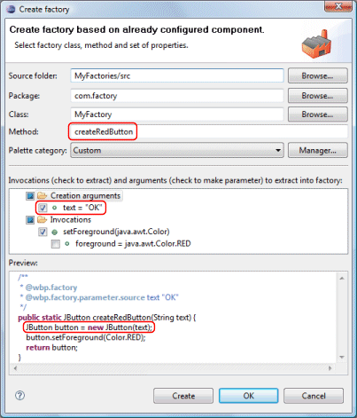 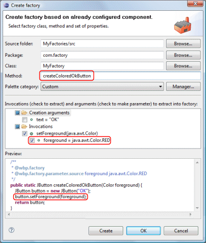
If an invocation property should be ignored entirely, uncheck it in the Invocations list as shown below.
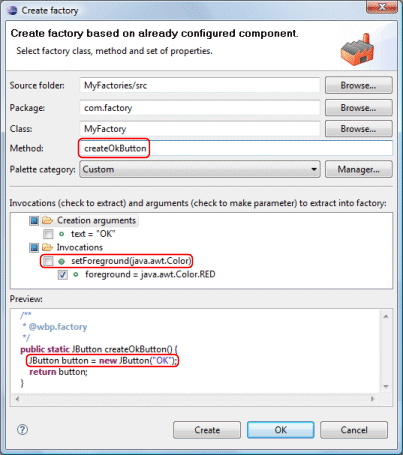
Clicking Create or OK, will create the factory class, if necessary, and add the factory method to it. Click Create to create multiple related methods at one time; click OK to create a single method and close the dialog.
Each factory method will be tagged with a @wbp.factory Javadoc tag. The tool uses that tag to identify factory methods in a factory class. If you create any factory methods by hand, you should add this same tag in order to identify it to the editor. Any arguments passed into the method should be identified with an @wbp.factory.parameter.source Javadoc tag. That tag should also include the name of the parameter and a suitable default value (used for initial code generation).
- import javax.swing.JButton;
- import java.awt.Color;
- public final class MyFactory {
- /**
- * @wbp.factory
- */
- public static JButton createRedOkButton() {
- JButton button =
new
JButton("OK");
button.setForeground(Color.RED);
return button; - }
- /**
- * @wbp.factory
- * @wbp.factory.parameter.source text "OK"
- */
- public static JButton createRedButton(String text) {
- JButton button =
new
JButton(text);
button.setForeground(Color.RED);
return button; - }
- /**
- * @wbp.factory
- * @wbp.factory.parameter.source foreground java.awt.Color.RED
- */
- public static JButton createColoredOkButton(Color foreground) {
- JButton button =
new
JButton("OK");
button.setForeground(foreground);
return button; - }
- /**
- * @wbp.factory
- */
- public static JButton createOkButton() {
- JButton button =
new
JButton("OK");
return button; - }
- }
The original widget source will be also replaced with a call to the newly created factory method.
- JButton okButton = MyFactory.createRedOkButton();
Applying a factory to a widget
Once created, a factory may be applied to an existing widget using the Factory > Select Factory... command. This is very similar to a morphing operation. Once a factory has been selected, its methods are shown directly in the Factory cascade menu as shown below.
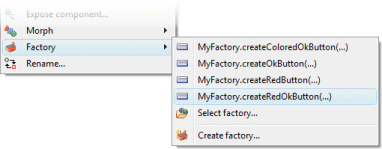
Adding factories to the palette
Factories may also be added to the palette for quick access using either the Palette Manager or the Palette context menu.
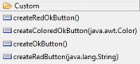
To add a single factory item, give it a name, select the factory class and method signature, and give it a description. The component may be initially visible or not and may be added to any available category.
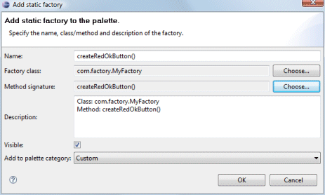
To add a multiple factory items at the same time, select the factory class and method signatures. The component name and description will be given default values. The components will be initially visible and may be added to any available category.
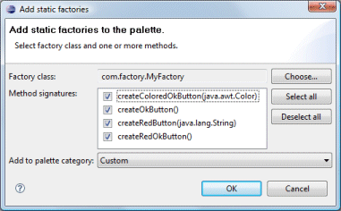